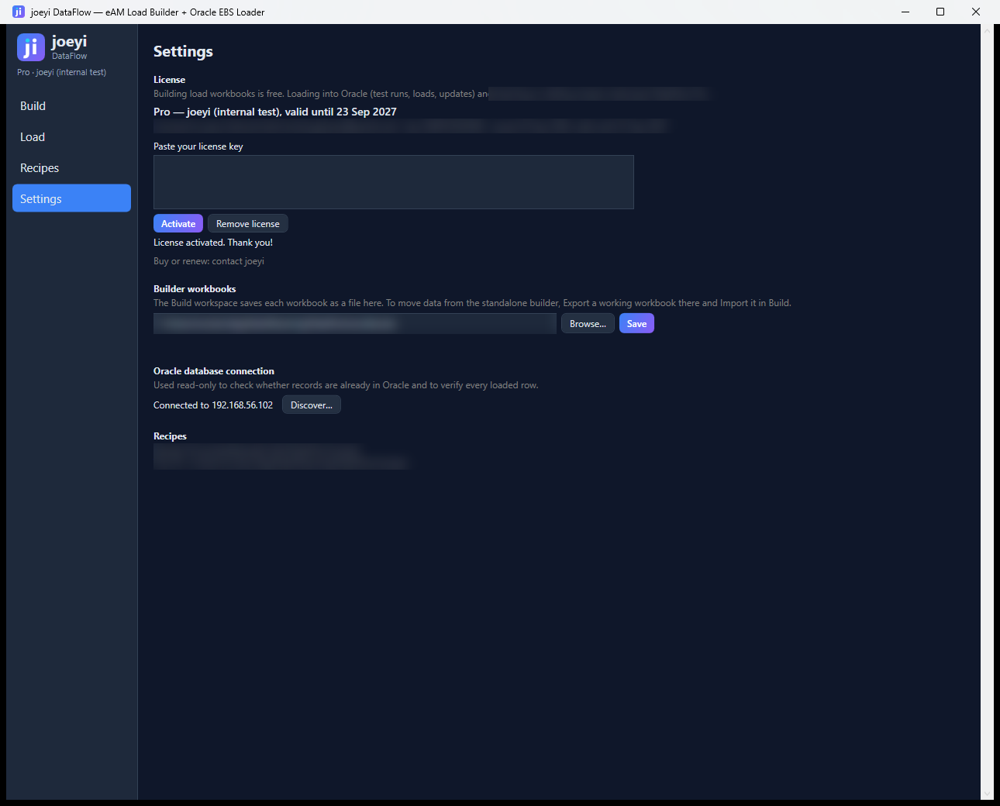
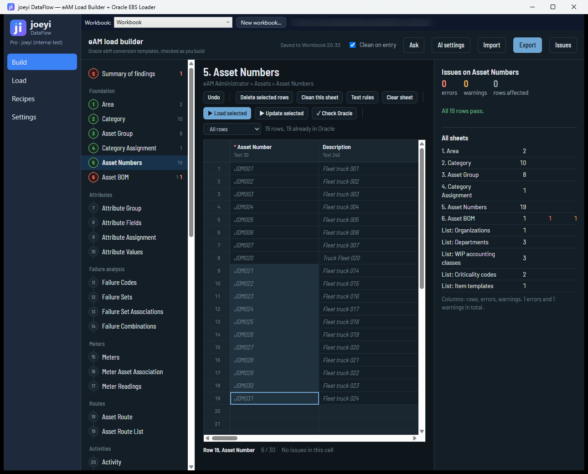
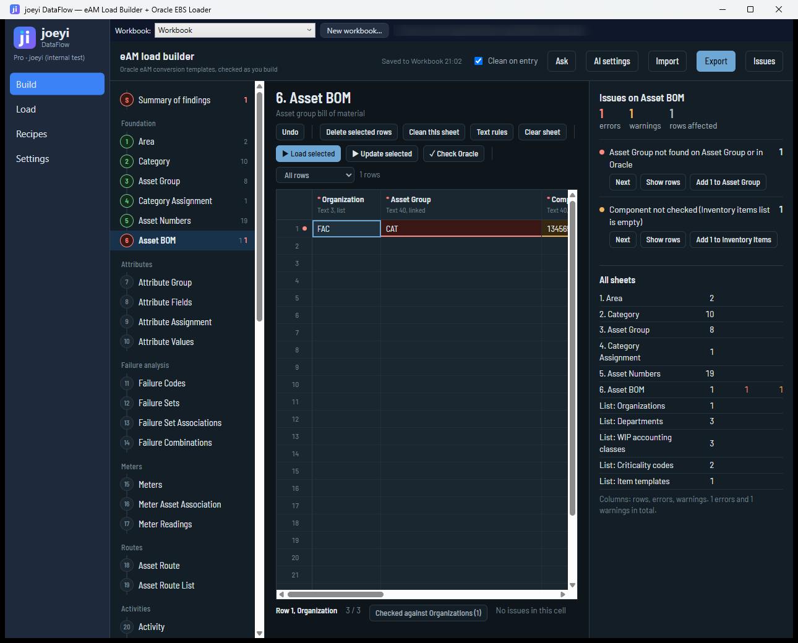
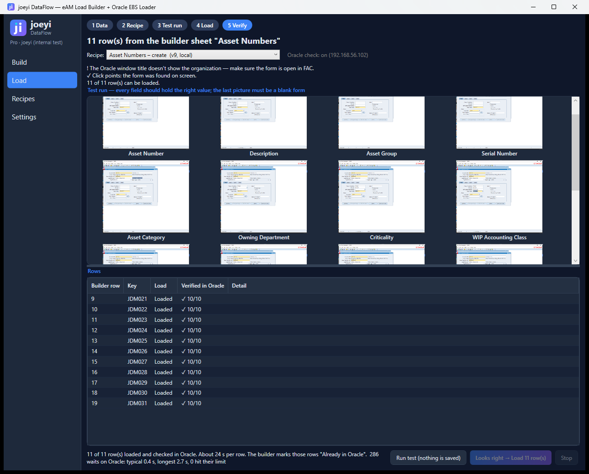
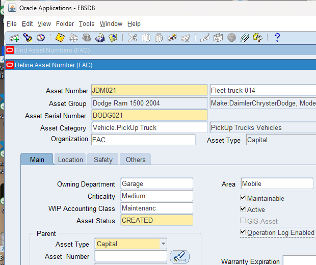
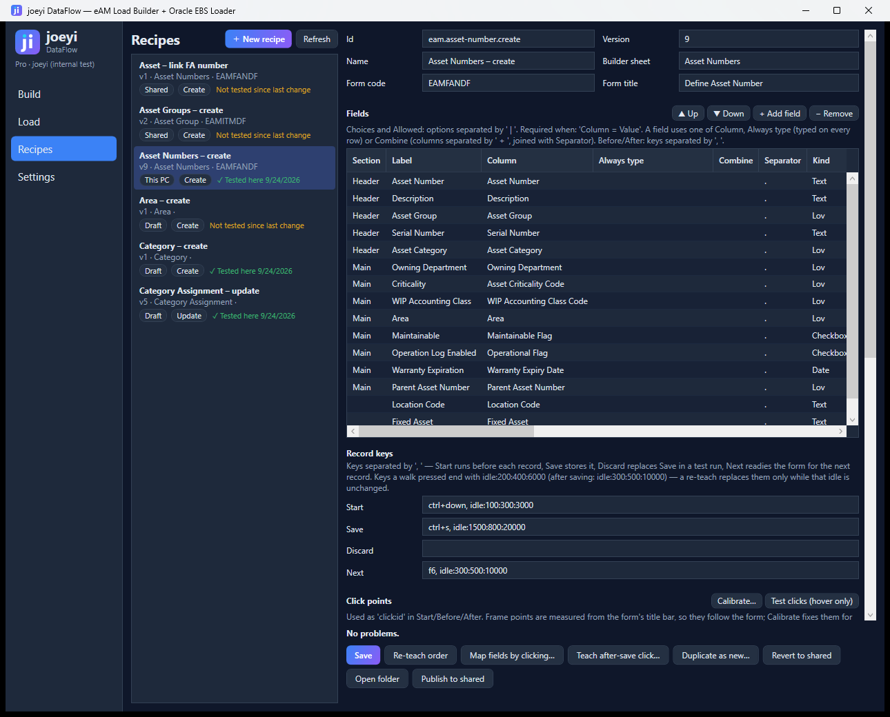
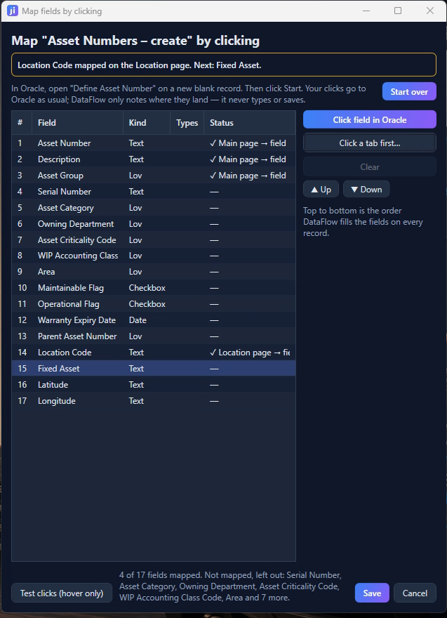

joeyi DataFlow — User Guide
DataFlow loads validated eAM conversion data into Oracle E-Business Suite. It has two parts:
- eAM Load Builder (free): build and check your conversion workbooks, sheet by sheet.
- DataFlow Pro (licensed): test, load and verify those rows in Oracle Forms, hands-free.
The flow is always the same: build → test run → load → verify.
1. Getting started
Install and open
Run the installer, then open joeyi DataFlow from the Start menu. The sidebar has four pages: Build, Load, Recipes and Settings. The line under the logo shows your edition (Free, Trial or Pro).
Activate your license
- Open Settings.
- Paste your license key (it starts with
JOEYI1-) into Paste your license key. - Click Activate. The sidebar now shows Pro · your company.
No key yet? Click Start 14-day trial for full Pro features. Building workbooks is always free; test runs, loads, updates and editing recipes need Pro or the trial.

Connect the Oracle check (recommended)
DataFlow reads your Oracle database — read-only — to see which records already exist and to verify every loaded row.
- In Settings → Oracle database connection, click Discover….
- Enter the database host, port, service and a database user. Use a read-only account; DataFlow never writes through this connection.
- Click Test connection, then Save connection. Settings shows Connected to followed by your host.
Without a connection you can still load, but DataFlow can't mark existing records or check the results.
Where your files live
| What | Where |
|---|---|
| Builder workbooks | the folder in Settings → Builder workbooks (you can change it) |
| Your recipes | %APPDATA%\DataFlow\recipes (drafts in …\recipes\drafts) |
| Shared recipes | the recipes folder next to DataFlow, or your team's shared folder |
| Test-run and load pictures | %APPDATA%\DataFlow\runs |
| License | %APPDATA%\DataFlow\license.key |
2. Build your data (free)
The Build page is the eAM Load Builder. Each sheet on the left is one Oracle conversion template, in load order: Area, Category, Asset Group, Category Assignment, Asset Numbers, Asset BOM, and so on. The numbers beside a sheet are its rows, errors and warnings.

Enter or paste data
- Type into the grid, or paste straight from Excel (Ctrl+V).
- Import brings in a workbook; Export saves one (for the standalone builder or a colleague).
- Workbooks save automatically — see Saved to … at the top.
Fix issues
Every cell is checked as you type: required fields, lengths, dates, lists and references to other sheets (an asset's group must exist on the Asset Group sheet or in Oracle).
The Issues panel on the right lists each problem with the rows it affects:
- Next jumps to the next affected cell; Show rows filters the grid to them.
- Add to … is a one-click fix when a value is simply missing from a list (for example Add 1 to Criticality codes).

Check Oracle
Click ✓ Check Oracle. DataFlow looks up every row in your live system (read-only) and marks the ones that are already in Oracle — they turn grey and are skipped when you load. The count appears above the grid, e.g. 19 rows, 8 already in Oracle. A parent asset that already exists in Oracle is never reported as missing.
3. Load into Oracle
- In Oracle, open the form for the sheet (for Asset Numbers: Define Asset Number in the right organization) on a new, blank record. Leave it open.
- In Build, select the rows to load (click the first, Shift+click the last) and click ▶ Load selected. DataFlow opens the Load page.
- Check the top of the page: the Recipe (DataFlow picks the saved one for the sheet), Click points: the form was found on screen, and how many rows can be loaded.
- Click Run test (nothing is saved). After 5 seconds Oracle comes to the front and DataFlow fills the form from the first row, photographing every field — then throws the record away.
- Check every picture. Each field should hold the right value, and the last picture must show a form with no unsaved record.
- Click Looks right → Load n row(s). Hands off the mouse and keyboard while it runs; Stop halts cleanly between steps.

Read the results
| Column | Meaning |
|---|---|
| Load | Loaded = every keystroke was sent, including Save. Failed = the row stopped, with the reason in Detail. Not run = skipped after a stop. |
| Verified in Oracle | ✓ 10/10 = the record was read back from the database and every field matches. ✗ = not found or a field differs — see Detail. |
Loaded and verified rows are marked Already in Oracle back in the builder, so loading the sheet again never creates duplicates.

4. Update existing records
Some sheets change records that already exist — for example Category Assignment (add a category to an asset group) or linking a fixed-asset number to an asset.
- Select the rows in Build and click ▶ Update selected.
- DataFlow uses the sheet's update recipe: it finds each record by its key (e.g. Asset Group), changes only the columns you filled, and leaves blank cells alone.
- Run the test and load exactly as in section 3. Updates run one row at a time and stop at the first row that doesn't verify.
5. Recipes
A recipe tells DataFlow how to fill one Oracle form: which builder column goes into which field, in what order, and what to press to save and start the next record. Each sheet has one recipe for creating records and can have one for updating them.

On the Recipes page:
- The list shows each recipe, where it comes from (Shared, This PC, Draft), whether it creates or updates, and when it last passed a test run on this PC.
- Select a recipe to see its fields and settings. Edits are saved as a new version on this PC only.
- Publish to shared copies a tested recipe to the shared library for your team.
- Revert to shared throws away your local version.
Most teams never edit recipes by hand — they teach them (section 6).
6. Teach a form
Map fields by clicking (recommended)
- In Oracle, open the form on a new, blank record.
- In Recipes, select the recipe (or create one with ＋ New recipe) and click Map fields by clicking….
- Click Start, then click the form's title bar once. DataFlow finds the form (no box to draw).
- If the form has tabs, click the tab that's open now (e.g. Main) and name it. No tabs? Click No tabs.
- For each field in the list: select it, click Click field in Oracle, then click that field in Oracle. It shows ✓ Main page → field (with your tab's name).
- Field on another tab? Click Click a tab first…, click the tab in Oracle, name it (e.g. Location), then click the field.
- Click Test clicks (hover only) — the mouse moves over each point without clicking — then Save. Fields you didn't map are left out (the Save message names them).

Checkboxes: clicking one to map it flips it; DataFlow flips it back and checks it did. At load time a checkbox is clicked only when the row's value differs from the form's default.
Other teaching tools
- Re-teach order walks the form with Tab, stop by stop — use it for forms where clicking doesn't work well.
- Teach after-save click… records a click to close a child window after each save (for example the Categories window in Master Item), so the main form stays open for the next record.
- Calibrate… fixes click points when Oracle's window moved or changed size.
Always run a test after teaching.
7. When things go wrong
| Problem | What to do |
|---|---|
| "Can't find the … window — Calibrate clicks" | Make sure the form is open and visible, then Recipes → Calibrate… (or re-map by clicking). |
| Oracle asks you to log back in | Log in, reopen the form on a blank record, then run the test again. Rows already verified stay marked. |
| A row shows Failed | Read Detail. The load stops there; rows before it are saved and verified. Fix the data in Build and load the remaining rows. |
| A row shows ✗ in Verified in Oracle | Oracle didn't keep the record (often a value Oracle rejected, like a fixed-asset number from another book). Fix the value in Build and load that row again. |
| "Clicking … didn't change the form" | Oracle refused a value before that tab (it keeps the cursor in the bad field). Nothing was saved; fix that value. |
| A field went into the wrong box | The form layout changed. Re-map by clicking, then run a test. |
| Buttons say they need Pro | Your trial or license ended — see Settings. Building stays free. |
To see exactly what happened, open the pictures in %APPDATA%\DataFlow\runs.
8. Safety
DataFlow is built so a mistake can't hurt your data:
- It never deletes a record — recipes refuse Oracle's delete key everywhere.
- Test runs never save — Save is replaced with clear the record.
- Oracle checks are read-only.
- You can stop at any time; it halts cleanly between steps.
- It stops when a page or save doesn't behave as expected, instead of typing into the wrong place.
- Nothing is loaded until you've seen a passing test run.
9. Reference
Oracle keys DataFlow uses
| Key | Oracle action | Used for |
|---|---|---|
| Ctrl+S | Save | saving each record (never in a test run) |
| F6 | Clear record | next record; discarding a test |
| F7 | Clear block | starting an update |
| F11 / Ctrl+F11 | Enter / execute query | finding a record to update |
| F5 | Clear field | before typing over a value |
| Ctrl+Down | Insert record | a new blank record |
| Alt+T | Tools menu | opening child windows (e.g. Categories) |
| Ctrl+Up | Delete record | never used |
Free vs Pro
| Free | Pro / trial | |
|---|---|---|
| Build, fix and check workbooks | ✓ | ✓ |
| Check Oracle (read-only) | ✓ | ✓ |
| View recipes | ✓ | ✓ |
| Test runs, loads, updates | ✓ | |
| Teach and edit recipes | ✓ |
Licenses are per company and run for a year; renewing is pasting the new key in Settings.